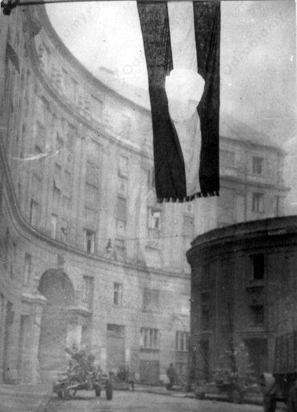

"Zimna wojna" to stan napięcia i rywalizacji politycznej oraz militarnej między blokami państw komunistycznych, zdominowanymi przez ZSRR a państwami demokratycznego Zachodu - na czele z USA. Była to wojna polityczna, propagandowa i gospodarcza, toczyła się na wszystkich kontynentach. Cechował ją: wyścig zbrojeń, konfrontacja ideologiczna, walka o wpływy na terenach peryferyjnych oraz instrumentalne traktowanie wymiany handlowej i kulturalnej.
Przyczyny zimnej wojny to:
zakończenie II wojny światowej,
ukształtowanie się dwóch bloków polityczno-militarnych: zachodniego (demokratycznego) na czele z USA i wschodniego (komunistycznego) na czele z ZSRS,
zmniejszenie roli przedwojennych mocarstw - Francji i Wielkiej Brytanii,
sowiecka polityka zmierzająca do maksymalnego rozszerzenia wpływów, prowadząca do podporządkowania wschodniej Europy ZSRR i zagrażająca również innym częściom kontynentu,
po zakończeniu II wojny światowej ZSRS i USA przystąpiły do rywalizacji o światowe przywództwo,
przemówienie Winstona Churchilla w Fulton 5 marca 1946 r.
Przyczyny wybuchu powstania węgierskiego w 1956 r.:
śmierć Józefa Stalina,
domaganie się przez Węgrów zmian i demokratyzacji życia,
odsunięcie od władzy Imre Nagy,
wydarzenia w innych państwach bloku wschodniego,
chłopi byli niezadowoleni z polityki rolnej (kolektywizacja),
dziennikarze i literaci narzekali na warunki swojej pracy i domagali się wolności słowa,
studenci skarżyli się na warunki nauki i kryteria przyjmowania na uniwersytety,
zapaść ekonomiczna i niskie standardy życia Węgrów.
Przebieg:
Pod wpływem "odwilży", 23 X 1956 r., wybuchło powstanie węgierskie. Wówczas studenci politechniki w Budapeszcie uzyskali zgodę na manifestację, podczas której chcieli przedstawić swoje żądania względem władzy. Przemarsz Węgrów miał zakończyć się na placu Józefa Bema, gdzie studenci mieli przeczytać swoje żądania, jednak marsz trwał dalej i coraz więcej ludzi się do niego się przyłączało. Część manifestujących poszła pod parlament, część pod radiostację w celu nagłośnienia niezadowolenia społecznego z polityki węgierskiej. To właśnie z budynku radiostacji dobyły się pierwsze strzały i rozpoczęło się krwawe tłumienie powstania. Od 4 do 10 listopada 1956 roku wojska armii sowieckiej zbrojnie interweniowały w wygaszaniu powstania. Działania rozpoczęły się 4 listopada o godz. 4:00 na sygnał "Grom". W akcji brało udział 58 tys. radzieckich żołnierzy.
Następstwa powstania węgierskiego w 1956 r.:
doszło do interwencji wojsk Związku Radzickiego,
za udział w powstaniu skazanych na śmierć zostało 230 osób (w tym Imre Nagy), a ok. 35 tysięcy uwięziono,
ZSRR powołał na Węgrzech wierny sobie rząd z Janosem Kadarem na czele,
rozpoczęła się masowa emigracja z Węgier, szczególnie przez Austrię do RFN,
blok wschodni ogarnął strach przed interwencją wojsk radzieckich,
wydarzenia na Węgrzech doprowadziły do załamania ideologicznego wewnątrz partii komunistycznych na świecie, szczególnie z Europy Zachodniej.

Flaga powstańców węgierskich na jednej z ulic Budapesztu, źródło zdjęcia: Wikimedia Commons.